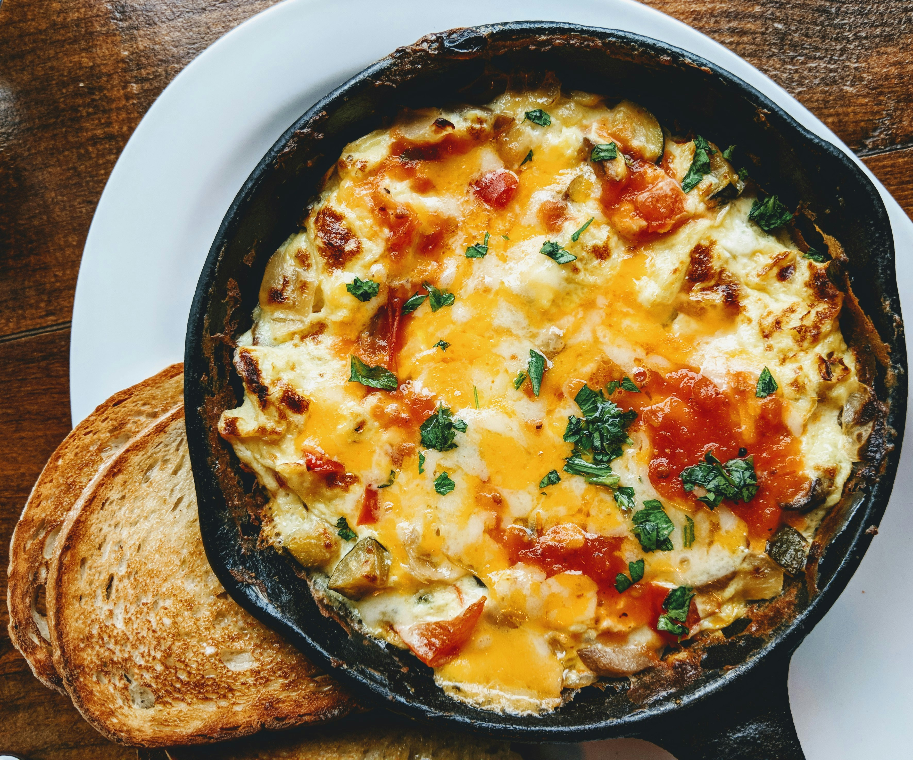

Lasagna

World's Best Lasagna
Learn how to make the world's best lasagna!
Anyone can make it!
Ingredients:
- ground beef
- italian sausage
- minced onion
- crushed tomatoes
- tomato sauce
- tomato paste
- water
- sugar
- parsley
- basil
- salt
- italian seasoning
- fennel seeds
- pepper
- lasagna noodles
- ricotta cheese
- egg
- mozz. cheese
- parm. cheese
Steps:
- Cook sausage, beef, onion in Dutch oven over medium heat.
- Stir in crushed tomatoes, tomato sauce, tomato paste, and water. Season with sugar, 2 tbsp parsley, basil, 1 tsp salt, Italian seasoning, fennel seeds, and pepper. Simmer, covered, for about 1.5 hrs. Stir occasionally.
- Bring a large pot of salted water to a boil. Cook lasagna noodles in it for about 8-10 min. Rinse with cold water.
- In a mixing bowl, combine ricotta cheese with egg, 2 tbsp parsley, and 1/2 tsp. salt.
- Preheat oven to 375 degrees.
- Spread 1.5 c meat sauce in 9x13-inch baking dish. Arrange 6 noodles lengthwise over that, overlapping slightly. Spread with 1/2 ricotta cheese mixture. Top with 1/3 mozzarella cheese slices. Spoon 1.5 c meat sauce over mozzarella. Sprinkle with 1/4 c parmesan cheese.
- Repeat layers. Top with remaining mozzarella cheese and parmesan cheese. Cover with foil. Either spray foil with cooking spray or make sure foil doesn't touch the cheese.
- Bake for 25 min. Remove foil and bake for 25 more minutes.
- Let lasagne rest for 15 minutes before serving.